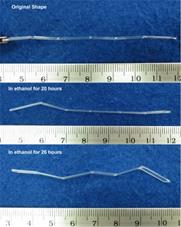
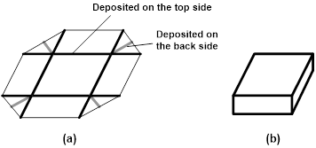

Journal of Fluid Flow, Heat and Mass Transfer (JFFHMT)
ISSN: 2368-6111

Volume 1, Year 2014 - Pages 16-22
DOI: 10.11159/jffhmt.2014.003
Chemo-responsive Shape Memory/change Effect in Polymeric Materials Based on Transport Phenomena
Wei Min Huang1, Yong Zhao1, Ji Liang Zhang1, Hai Bao Lu2
1Nanyang Technological University, School of Mechanical and Aerospace Engineering
50 Nanyang Avenue, Singapore 639798
mwmhuang@ntu.edu.sg; Zhao0102@e.ntu.edu.sg; M110056@e.ntu.edu.sg
2Science and Technology on Advanced Composites in Special Environments Laboratory, Harbin Institute of Technology, Harbin 150080, PR China
luhb@hit.edu.cn
Abstract - In this paper, the major fundamental mechanisms based on three transport phenomena, namely, limited swelling, significant swelling and diffusion, for the chemo-responsive shape memory/change effect in polymeric materials are discussed in details. Some recently proposed typical applications of these effects either individually or combined together are presented. It is concluded that various transport phenomena provide us alternative approaches to realize novel devices/structures, which are not easy to be achieved by conventional techniques.
Keywords: Shape memory effect, Shape change effect, Swelling, Polymeric material, Microlens array, Chemo-responsive, Diffusion.
© Copyright 2015 Authors This is an Open Access article published under the Creative Commons Attribution License terms. Unrestricted use, distribution, and reproduction in any medium are permitted, provided the original work is properly cited.
Date Received: 2014-05-17
Date Accepted: 2014-08-29
Date Published: 2014-10-07
1. Introduction
After being severely and quasi-plastically deformed, shape memory materials (SMMs) are able to recover their original shape, but only when the right stimulus is presented. This phenomenon is known as the shape memory effect (SME) [1-3], which is different from the conventional shape change effect (SCE), in which the response to the applied stimulus is either immediately or gradually (e.g., viscous-elastically) and in an either linearly or nonlinearly proportional manner [4-6]. A typical example of the SCE is swelling of hydrogel in water.
The fundamental difference between the SME and SCE is illustrated in Figure 1, in which the stimulus is mechanical force (mechano-responsive). In Figure 1(a), the tip deflection of the cantilever in the vertical direction is proportional to the applied force, so that this is the SCE. On the other hand, in Figure 1(b), the arch is a bistable structure since it has two stable positions. The arch may switch from one stable position to the other stable position only when the applied force is over a critical value, so that this is the SME. However, in this particular case, the underlying mechanism for the SME is bistable structure, which is not generic. Refer to [7,8] and [5] for a range of basic working mechanisms for the SME in materials.
Both SCE and SME have been applied either separately or in a combined fashion for many engineering applications, although the SME seemingly has a much shorter history of engineering application [9-16]. Among other types, chemo-responsive SME/SCE, i.e., the applied stimulus is a chemical or solvent [17-23], is highly related to various transport phenomena. It should be pointed out that although it is termed chemo-responsive, it is essentially still a physical process without involving any chemical reaction at all and in some cases, such a transport phenomenon might be reversible.
The purpose of this paper is to reveal the relationship among various transport phenomena and different types of chemo-responsive SME/SCE. The focus is only on the basic working mechanisms, but not on the various special features of some individual cases. Subsequently, typical recently proposed engineering applications of chemo-responsive SME/SCE either separately or combined together are presented. Main conclusions are summarized in Section 4.
2. Basic working mechanisms behind chemo-responsive SME/SCE
Chemo-responsive SME/SCE is essentially driven by various transport phenomena. According to the swelling ratio which is determined by the actual chemical/solvent system, we may roughly divide all kinds of chemo-response phenomena into three categories regardless of its SME or SCE nature, namely limited swelling, significant swelling and diffusion (infinite swelling). It should be pointed out that while the first two are likely to be reversible, the last one is non-reversible in most situations.
A schematic illustration of the penetration process of a solvent into a polymeric material is presented in Figure 2. Note that the transient layer between 100% polymer and 100% solvent might be very thin [case II theory as in poly(methyl methacrylate) (PMMA) wetted by ethanol [24]. Absorbed solvent may have no remarkable influence to change the chemical/physical properties of the polymer or may function as plasticizer to lower down the glass transition temperature (Tg) [as in the case of polyurethane wetted in water [25]. In the case of polymeric shape memory hybrid (SMH), which has a dual-component structure, one component (inclusion) may be fully dissolved by the solvent, while the other (matrix) is always highly elastic [26]. Details about these issues will be discussed shortly.
2. 1. Limited Swelling
By means of selecting a right solvent, swelling induced volume expansion in a particular polymeric material may be virtually ignorable, so that this is the situation of limited swelling. However, the absorbed solvent either totally or partially may function as a plasticizer to remarkably reduce the Tg of a polymeric material. Consequently, instead of heating to trigger the heating-responsive SME, shape recovery may be induced when the Tg is lowered down to below the ambient temperature. Since no heat is involved but chemical/solvent only, this is the chemo-responsive SME. As discussed in [7], heating-responsive SME and chemo-responsive SME are intrinsic features of most polymeric materials, if not all.
Depending on the particular material system, the actual format of penetration of solvent into a polymer varies. A gradual transient layer may be used to tailor or fine tune the Tg to achieve a gradient distribution of Tg, while results in a wider temperature range of the glass transition [27]. A typical application of such a transport phenomenon is water-driven programmable shape recovery of polyurethane [17, 19, 28, 29]. It should be pointed out that many protein based polymers, such as hair, nail and silk etc, are also under this category [7]. Figure 3 reveals the water-responsive SME in human hair. Note that programming, which is the technical term for the process to fix the temporary shape of a material in a full SME cycle, is carried out by drying the deformed hair. Such a programming-by-drying method may not be always easily accessible in engineering practice. For instance, while free water in polyurethane, which has no apparent influence on the Tg of polyurethane, can be removed upon heating to 130oC, in order to get rid of bounded water, which is able to significantly reduce the Tg, one has to heat polyurethane to over 130oC [25].
Another issue that should be pointed out is the possible lost of stability during wetting for shape recovery [24, 30, 31]. A simple case of buckling of a pre-stretched polyurethane wire is illustrated in Figure 4. The wire is programmed by meaning of uniaxial stretching and then immersing into ethanol for wetting. Upon reaching a critical ethanol penetration depth, the internal compressive force produced in the wetted part of polyurethane is high enough to cause the wire to lost its stability, so that buckling occurs. However after being fully wetted, the wire more or less returns its original shape without apparent volume expansion.
Upon exposure to a high humidity environment, some hydrogels may turn to be soft (either rubber-like or viscous-elastic, i.e., having the mechano-responsive SCE) but without much volume expansion [32]. A piece of such a hydrogel may be programmed into a temporary shape by means of either deforming dry hydrogel at high temperatures (above its Tg) and then cooling back to room temperature or deforming soft hydrogel and then drying it. Upon exposure into a high humidity environment again, the absorbed moisture is able to reduce the Tg of the hydrogel and thus induce moisture-responsive SME as shown in Figure 5.
2. 2. Significant Swelling
The most important feature of hydrogels should be swelling induced huge volume expansion, which itself is essentially the water-responsive SCE. Normally, the stiffness of hydrogel decreases with the increase of water content. Refer to [32]for a road map which reveals the influence of water content on the shape/change effect of hydrogels. Similar working principle should be applicable to other polymer/solvent systems.
Figure 6 presents snapshots (optical microscope image) of the surface morphology change of a piece of hydrogel after being wetted by one single water droplet. As we can see, at 110 s, many protrusions start to merge, quickly grow and then disappear. The evolution of surface morphology is caused by swelling induced softening and large volume expansion. The detailed underlying mechanism is revealed in Figure 7. When a water droplet is placed atop a piece of hydrogel, the underneath part of hydrogel is wetted and swells remarkably. When the critical conditions are satisfied [33], wrinkles appear. However, the absorbed water is going to spread further, so that the depth of wetted layer becomes thicker, while with the decrease of water content, the wetted part becomes harder. Consequently, the wavelength of wrinkles gradually increases, until wrinkles disappear and leaves only a bit of swelling, which can be observed in the wetted area.
Normally, upon wetting in water, the surface of hydrogel is quickly occupied by flower-like features, which is due to swelling induced surface wrinkling and disappear after the distribution of water within hydrogel becomes relatively uniform. We are not able to see the chemo-responsive SME in a piece of pre-deformed hydrogel, due to the dominant influence of swelling. However, for hydrogels with relatively small swelling induced volume increase, the chemo-responsive SME may be observed within the water-responsive SCE. For instance, a pre-stretched hydrogel may shrink in the middle of an overall expansion process.
2. 3. Diffusion (Infinite Swelling)
The extreme situation of swelling is diffusion. Here, it is the transition component, which is dissolved by a solvent, while the elastic component remains untouched [7]. Based on the concept of SMH, one can design a hybrid with a particular dissolvable material as the transition component [26]. As shown in Figure 8, a pre-compressed piece of silicone (matrix)-polyethylene glycol (PEG)(inclusion) hybrid is able to fully recover its original shape upon immersion into water via dissolving PEG in water. Here, PEG may be replaced by a particular medicine for applications, such as drug eluated retractable medical devices, in particular for minimally invasive surgery [5].
3. Typical applications
Utilizing above mentioned types of chemo-responsive SCE/SME, a range of applications can be worked out. Apart from biomedical applications, which have been briefly summarized in [5], a couple of recently proposed ones are presented here.
In Figure 9, a piece of dry hydrogel is heated to above its Tg and then an indent is impressed on its top surface. Instead of heating to above its Tg, a water droplet is enough to fully remove the indent. As an alternative to apply heat [34-36], this phenomenon may be used for water activated anti-counterfeit purpose, i.e., to switch from a temporary surface pattern to a pre-determined 3D morphology. Different from heat activated devices, a water activated device may be used simultaneously as a moisture accumulation sensor, in which when the accumulated moisture content is over a critical amount, the indent disappears (Figure 10). A further extension of such a technique is to apply for detection of other chemicals/solvents.
The internal stress enhanced swelling in PMMA upon immersion in room temperature ethanol provides a simple technique to fabricate micolens [37]. As shown in Figure 11 (top row), after impression at room temperature using different shaped indenters, an internal stress field is introduced into the indented area. Upon immersion in room temperature ethanol, the part of PMMA with internal stress swells much faster than the other parts without internal stress, so that a protrusion (microlens) is produced (Figure 11 bottom row). Lenticular microlens and microlens array can be easily produced in the same manner as presented in Figure 12. As compared with other techniques to produce microlens [38, 39], this approach is simple and applicable for producing 3D compound microlens with high accuracy.
Self-folding/unfolding attracts great interest from many researchers in recent years [40,41]. Enhanced by 3D printing technology, origami is seemingly changing our design in many ways, and the concept of 4D printing is just emerging as an alternative technique to produce 3D structures [42].
Figure 13 presents two examples of self-folding. Figure 13(I) is done by local impressing at room temperature on both sides of a 1 mm thick PMMA strip to introduce local internal stress field at some special locations, and then immersing the piece of PMMA strip into room temperature ethanol, which results in the strip bends into a zigzag shape. Figure 13(II) is to print/deposit hydrogel strips on both sides of a thin elastic film. Upon immersing into water, hydrogel strips swell remarkably so that a box is automatically formed without any additional physical touching.
|  |  |
| (I) | (II) |
4. Conclusions
In this paper, the major mechanisms based on three transport phenomena, namely limited swelling, significant swelling and diffusion, for the chemo-responsive shape memory/change effect in polymeric materials are discussed in details. Some recently proposed applications, such as moisture accumulation sensor, microlens, and self-folding structure, based these phenomena either individually or combined together are presented. As demonstrated by these typical applications, various transport phenomena provide us alternative approaches to realize novel devices/structures, which are difficult to be achieved based only on conventional techniques.
References
[1] Funakubo, H., ed. Shape Memory Alloys. 1987, Gordon and Breach Science Publishers: New York. View Book
[2] Duerig, T.W., et al., Engineering aspects of shape memory alloys. 1990, Woburn, MA: Butterworth-Heinemann. View Books
[3] Huang, W.M., et al., Shape memory materials. Materials Today, 2010. 13(7-8): p. 54-61. View Article
[4] Sun, L., et al., Stimulus-responsive shape memory materials: a review. Materials and Design, 2012. 33: p. 577-640. View Article
[5] Huang, W.M., et al., Shaping tissue with shape memory materials. Advanced Drug Delivery Reviews, 2013. 65(4): p. 515-535. View Article
[6] Lendlein, A., Shape-memory Polymers. 2010: Springer-Verlag Berlin Heidelberg. View Article
[7] Huang, W.M., et al., Thermo/chemo-responsive shape memory effect in polymers: a sketch of working mechanisms, fundamentals and optimization. Journal of Polymer Research, 2012. 19(9): p. 9952. View Article
[8] Wu, X., et al., Mechanisms of the shape memory effect in polymeric materials. Polymers, 2013. 5(4): p. 1169-1202. View Article
[9] Huang, W.M., et al., Thermo-moisture responsive polyurethane shape-memory polymer and composites: a review. Journal of Materials Chemistry, 2010. 20(17): p. 3367-3381. View Article
[10] Gunes, I.S. and S.C. Jana, Shape memory polymers and their nanocomposites: A review of science and technology of new multifunctional materials. Journal of Nanoscience and Nanotechnology, 2008. 8(4): p. 1616-1637. View Article
[11] Dietsch, B. and T. Tong, A review - features and benefits of shape memory polymers (SMPs). Journal of Advanced Materials, 2007. 39(2): p. 3-12. View Article
[12] Fu, Y.Q., et al., TiNi-based thin films in MEMS applications: a review. Sensors and Actuators a-Physical, 2004. 112(2-3): p. 395-408. View Article
[13] Feninat, E.F., et al., Shape memory materials for biomedical applications. Advanced Engineering Materials, 2002. 4(3): p. 91-104. View Article
[14] Sun, L., et al., Shape memory technology for active assembly/ disassembly: fundamentals, techniques and example applications. Assembly Automation, 2014. 34(1): p. 78-93. View Article
[15] Sun, L., et al., Polymeric shape memory materials and actuators. Liquid Crystals, 2013. 41: p. 277-289. View Article
[16] Sokolowski, W.M. and S.C. Tan, Advanced self-deployable structures for space applications. Journal of Spacecraft and Rockets, 2007. 44(4): p. 750-754. View Article
[17] Jung, Y.C., H.H. So, and J.W. Cho, Water-responsive shape memory polyurethane block copolymer modified with polyhedral oligometric silsesquioxane (vol 45, pg 453, 2006). Journal of Macromolecular Science Part B-Physics, 2006. 45(6): p. 1189-1189. View Article
[18] Willett, J.L., Humidity-responsive starch-poly(methyl acrylate) films. Macromolecular Chemistry and Physics, 2008. 209(7): p. 764-772. View Article
[19] Du, H.Y. and J.H. Zhang, Solvent induced shape recovery of shape memory polymer based on chemically cross-linked poly(vinyl alcohol). Soft Matter, 2010. 6(14): p. 3370-3376. View Article
[20] Sun, L. and W.M. Huang, Thermo/moisture responsive shape-memory polymer for possible surgery/operation inside living cells in future. Materials & Design, 2010. 31(5): p. 2684-2689. View Article
[21] Mather, P.T., X.F. Luo, and I.A. Rousseau, Shape memory polymer research. Annual Review of Materials Research, 2009. 39: p. 445-471. View Article
[22] Lu, H.B., W.M. Huang, and Y.T. Yao, Review of chemo-responsive shape change/memory polymers. Pigment & Resin Technology, 2013. 42(4): p. 237-246. View Article
[23] Zhao, C.S., et al., Polymeric pH-sensitive membranes - A review. Progress in Polymer Science, 2011. 36(11): p. 1499-1520. View Article
[24] Zhao, Y., et al., Buckling of poly(methyl methacrylate) in stimulus-responsive shape recovery. Applied Physics Letters, 2011. 99(13): p. 131911. View Article
[25] Yang, B., et al., Effects of moisture on the thermomechanical properties of a polyurethane shape memory polymer. Polymer, 2006. 47(4): p. 1348-1356. View Article
[26] Fan, K., et al., Water-responsive shape memory hybrid: design concept and demonstration. eXPRESS Polymer Letters, 2011. 5(5): p. 409-416. View Article
[27] Yang, B., et al., On the enects of moisture in a polyurethane shape memory polymer. Smart Materials & Structures, 2004. 13(1): p. 191-195. View Article
[28] Huang, W.M., et al., Water-driven programmable polyurethane shape memory polymer: Demonstration and mechanism. Applied Physics Letters, 2005. 86(11): p. 114105. View Article
[29] Hu, J.L., et al., A review of stimuli-responsive polymers for smart textile applications. Smart Materials and Structures, 2012. 21(5). View Article
[30] Wang, C.C., et al., Chemically induced morphing in polyurethane shape memory polymer micro fibers/springs. Reactive & Functional Polymers, 2012. 72: p. 757-764. View Article
[31] Huang, W.M., et al., Instability / collapse of polymeric materials and their structures in stimulus-induced shape / surface morphology switching. Materials and Design, 2014. 59: p. 176-192. View Article
[32] Zhang, J.L., et al., Thermo-/chemo-responsive shape memory/change effect in a hydrogel and its composites. Materials and Design, 2014. 53: p. 1077-1088. View Article
[33] Pandey, A. and D.P. Holmes, Swelling-induced deformations: a materials-defined transition from macroscale to microscale deformations. Soft Matter, 2013. 9(23): p. 5524-5528. View Article
[34] Wu, X.L., W.M. Huang, and H.X. Tan, Characterization of shape recovery via creeping and shape memory effect in ether-vinyl acetate copolymer (EVA). Journal of Polymer Research, 2013. 20: p. 150. View Article
[35] Pretsch, T., et al., Switchable information carriers based on shape memory polymer. Journal of Materials Chemistry, 2012. 22(16): p. 7757-7766. View Article
[36] Fritzsche, N. and T. Pretsch, Miniaturization of QR code carriers based on shape memory polymer Proceedings of the Asme Conference on Smart Materials, Adaptive Structures and Intelligent Systems, Vol 1. 2013. 81-88. View Article
[37] Zhao, Y., et al., Formation of micro protrusive lens arrays atop poly(methyl methacrylate). Optics Express, 2011. 19(27): p. 26000-26005. View Article
[38] Chan, E.P. and A.J. Crosby, Fabricating microlens arrays by surface wrinkling. Advanced Materials, 2006. 18(24): p. 3238-3242. View Article
[39] Liu, N., et al., Formation of micro protrusion arrays atop shape memory polymer. Journal of Micromechanics and Microengineering, 2008. 18(2). View Article
[40] Ionov, L., Soft microorigami: self-folding polymer films. Soft Matter, 2011. 7(15): p. 6786-6791. View Article
[41] Kim, J., et al., Thermally responsive rolling of thin gel strips with discrete variations in swelling. Soft Matter, 2012. 8(8): p. 2375-2381. View Article
[42] Felton, S.M., et al., Self-folding with shape memory composites. Soft Matter, 2013. 9(32): p. 7688-7694. View Article